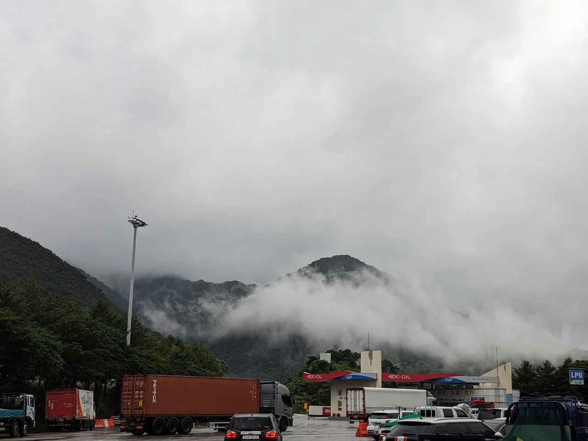
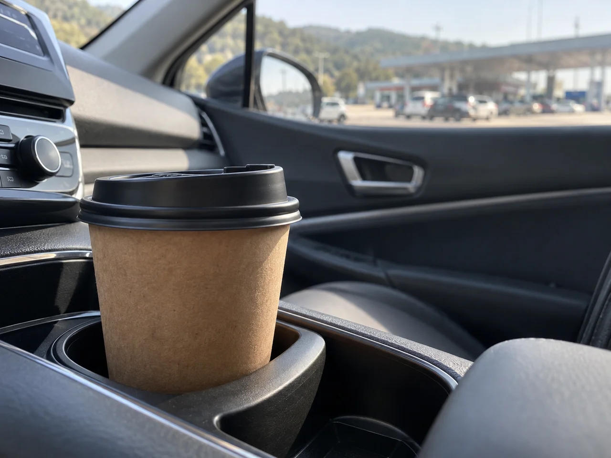
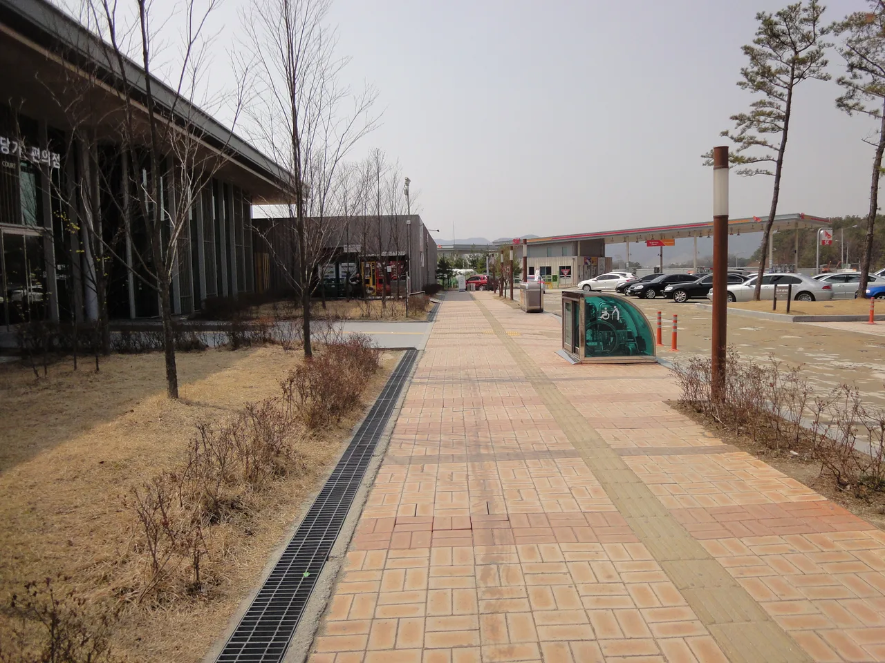
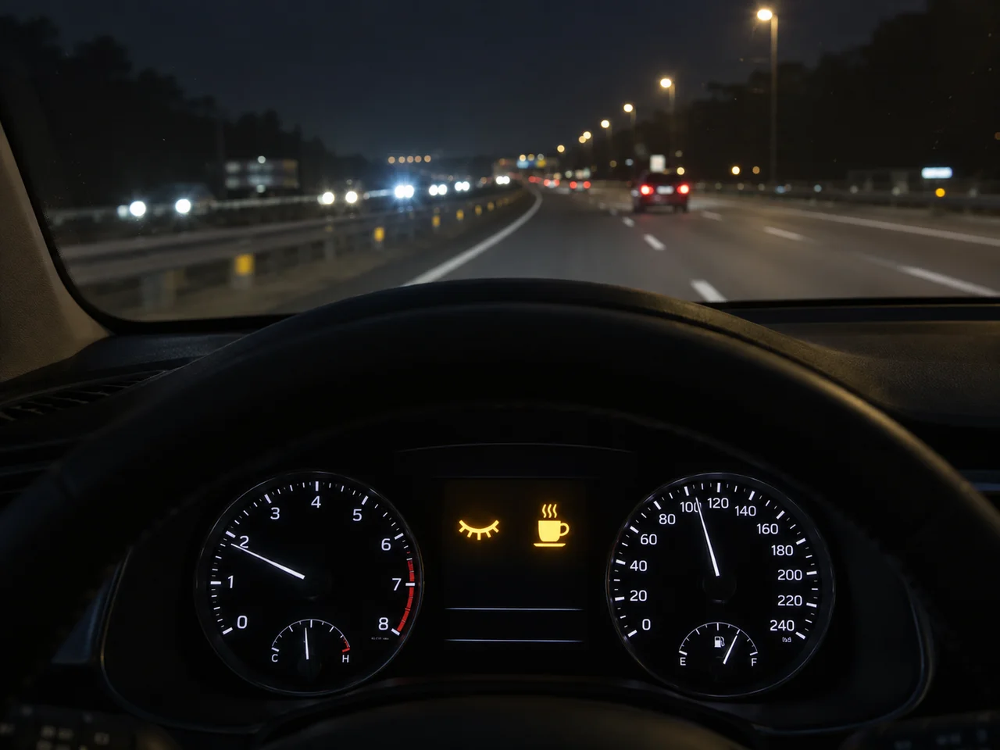

▲ 장거리 운전에서 졸음을 느낀다면 무리해서 목적지까지 달리기보다 가까운 휴게소·졸음쉼터부터 찾아야 한다 ⓒ Sikander Iqbal / Wikimedia Commons (CC BY-SA 4.0)
고속도로에서 가장 무서운 사고는 브레이크를 밟지 못한 사고다. 운전자가 졸면 위험을 인지해도 반응할 수 없기 때문에, 급제동이나 핸들 조작 없이 그대로 앞차나 도로 시설물을 들이받는 경우가 많다. 그만큼 졸음운전 사고는 일반 사고보다 치명적이다.
특히 명절 귀성길·귀경길처럼 장거리를 한 번에 달려야 하는 상황에서는 피로가 누적된 채 운전대를 잡기 쉽다. 졸음이 왜 위험하고, 어떻게 해야 실제로 졸음을 피할 수 있는지 데이터와 함께 정리했다.
1. 졸음운전, 음주운전보다 위험한 이유 — 사고 통계로 본 실체
졸음운전은 흔히 음주운전보다 가볍게 여겨지지만, 실제 통계는 반대를 가리킨다. 한국도로공사 집계에 따르면 최근 3년간 고속도로 졸음운전 사고의 치사율은 13.4%로, 같은 기간 음주운전 사고 치사율(10.6%)보다 높다.
| 사고 유형 | 치사율 |
|---|---|
| 졸음운전 사고 | 13.4% |
| 음주운전 사고 | 10.6% |
2026년 상반기 수치는 더 뚜렷하다. 고속도로 교통사고 사망자는 전년 대비 35.7% 늘었는데, 이 중 졸음운전과 전방 주시태만으로 숨진 사람이 68명으로 전체의 71.6%를 차지했다. 이는 최근 3년 상반기 평균(46명)보다 47.8% 증가한 수치다. 특히 7월에는 전체 사망사고의 83%(12명 중 10명)가 졸음·주시태만에서 비롯됐다.
📍 왜 이렇게 치명적일까
졸음운전 사고가 유독 치명적인 이유는 운전자가 위험을 인지하지 못한 채 그대로 충돌하기 때문이다. 일반 사고는 충돌 직전 브레이크를 밟거나 핸들을 꺾어 속도가 줄어드는 경우가 많지만, 졸음운전은 제동 흔적 없이 전속력으로 충돌하는 경우가 흔해 피해 규모가 커진다.
2. 몸에서는 무슨 일이 벌어지나 — 수면부족·식후 혈당·산소 부족
운전 중 졸음은 단순히 '의지 부족'의 문제가 아니라 신체 반응이다. 크게 세 가지 요인이 겹치면서 졸음이 급격히 밀려온다.
✅ 졸음을 유발하는 3가지 생리적 요인
· 수면 부족·아데노신 축적 — 뇌를 각성시키는 카페인은 원래 졸음 신호 물질인 아데노신과 구조가 비슷해 수용체를 대신 차지하는 방식으로 작동한다. 아데노신이 계속 쌓이면 카페인만으로는 감당이 안 될 만큼 졸음이 몰려온다
· 식후 혈당 변화 — 휴게소에서 식사 후 혈당이 오르내리는 과정에서 나른함을 느끼기 쉬워, 식사 직후 바로 장거리 운전을 재개하는 것은 좋지 않다
· 히터·에어컨 사용 시 산소 부족 — 밀폐된 차 안에서 히터나 에어컨을 계속 틀면 실내 산소 농도가 서서히 낮아지고 이산화탄소 농도는 올라가, 반응 속도가 둔해지고 졸음을 유발할 수 있다

▲ 카페인은 졸음 신호 물질인 아데노신의 자리를 대신 차지해 각성 효과를 낸다 ⓒ CarPrism (AI 생성 이미지)
3. 효과적인 졸음 방지법 — 커피 냅부터 휴게소 활용까지
졸음을 '완전히 없애는' 방법은 사실상 휴식뿐이지만, 짧은 시간 안에 각성 효과를 극대화하는 조합은 있다. 바로 카페인과 짧은 낮잠을 함께 활용하는 '커피 냅(Coffee Nap)'이다.
📍 커피 냅이 효과적인 이유
카페인의 각성 효과는 섭취 후 약 20분 뒤부터 나타나기 시작한다. 이 시차를 이용해 커피를 마신 직후 15~20분간 짧은 낮잠을 자면, 잠자는 동안 뇌가 일부 아데노신을 제거하고 잠에서 깰 즈음 카페인 효과까지 겹쳐 훨씬 맑은 상태로 깨어날 수 있다. 실제 운전 시뮬레이터 연구에서도 커피와 낮잠을 병행한 참가자의 졸음운전 횟수가 줄어든 결과가 나왔다.
| 방법 | 포인트 |
|---|---|
| 커피 냅 | 커피 섭취 직후 15~20분 낮잠 — 카페인 효과 발현 시점과 기상 시점을 맞춤 |
| 정기적인 휴게소·졸음쉼터 이용 | 2시간 주행마다 최소 15분 휴식 — 몸을 움직이고 바깥 공기를 쐬는 것이 핵심 |
| 주기적인 환기 | 히터·에어컨 사용 중이라도 창문을 열어 신선한 공기를 주기적으로 순환시켜 실내 산소 농도 유지 |
| 식사량 조절 | 과식 후 곧바로 운전을 재개하기보다 가벼운 식사 + 짧은 휴식을 함께 배치 |
전국 졸음쉼터 위치는 공공데이터포털에서 표준데이터로 확인할 수 있다. 전국졸음쉼터표준데이터 바로가기
4. 효과 없는 속설 — 껌 씹기, 큰 소리 음악, 창문만 여는 것
운전자들 사이에 퍼진 졸음 방지 속설 중 상당수는 '일시적인 자극'일 뿐, 근본적인 해결책이 되지 못한다. 전문가들은 이런 방법들의 효과가 매우 짧고 사람마다 편차가 크다고 지적한다.
⚠️ 효과가 제한적인 방법들
· 껌 씹기 — 턱 근육 자극으로 순간적인 각성감은 줄 수 있지만 졸음의 근본 원인(수면 부족)은 해소하지 못함
· 큰 소리로 음악 듣기 — 청각 자극으로 잠깐 정신이 들 수 있으나 몇 분 내로 다시 익숙해져 효과가 사라짐
· 창문만 여는 환기 — 산소 공급에는 도움이 되지만 이미 쌓인 수면 부담을 없애지는 못함
· "괜찮다"는 자기 판단 — 졸음운전의 특징은 본인이 졸았다는 사실 자체를 인지하지 못하는 '마이크로슬립'이 반복된다는 점 — 스스로 안 졸린다고 느껴도 이미 위험 구간에 들어섰을 수 있음

▲ 껌이나 음악으로 버티기보다, 몸을 움직일 수 있는 휴게소에서 실제로 걷고 쉬는 편이 훨씬 효과적이다 ⓒ Wikimedia Commons
5. 최신 차량의 졸음운전 감지 기술 — DMS와 차선이탈경고
최근 신차에는 운전자의 졸음을 직접 감지하는 기술이 빠르게 탑재되고 있다. 대표적인 것이 운전자 모니터링 시스템(DMS, Driver Monitoring System)이다.
📍 DMS는 무엇을 감지하나
DMS는 스티어링 휠이나 계기판 주변에 장착된 카메라·센서로 눈이 감기는 정도, 눈 깜빡임 속도 저하, 고개가 떨어지는 움직임 등을 실시간으로 분석해 졸음 여부를 판단한다. 시선이 정면 도로를 벗어난 상태가 이어지면 경고음이나 진동으로 알림을 준다. 여기에 차선이탈경고(LDW)가 더해지면, 졸음으로 차량이 차선을 벗어나려 할 때 이중으로 경고할 수 있다.

▲ 최신 차량은 졸음 징후가 감지되면 계기판 경고와 함께 휴식을 권고한다 ⓒ CarPrism (AI 생성 이미지)
유럽 신차 안전성 평가 프로그램(Euro NCAP)은 이미 신차 안전 평가 항목에 졸음·주의 경고 시스템을 반영했으며, EU는 일반안전규정(GSR)에 따라 2024년 7월부터 모든 신차에 졸음·주의력 경고 시스템(DDAW) 탑재를 의무화했다. 카메라 기반으로 시선 이탈까지 감지하는 운전자 부주의 경고 시스템(ADDW)은 신규 차종부터 순차 적용돼 2026년 7월까지 모든 신차로 확대된다. 국내에서도 첨단운전자보조시스템(ADAS)이 탑재된 신차를 중심으로 관련 기능 탑재가 확산되는 추세다.
✅ 다만 DMS는 '보조 장치'일 뿐
DMS나 차선이탈경고는 졸음의 징후를 미리 알려주는 보조 수단이지, 졸음 자체를 없애주지는 않는다. 경고가 울렸다면 그 즉시 다음 휴게소나 졸음쉼터에서 쉬어가야 하며, 경고를 무시하고 계속 달리는 것은 매우 위험하다.
6. 졸음쉼터 — 휴게소 사이 빈 구간을 메우는 안전장치
한국도로공사는 2011년부터 졸음쉼터를 설치해 현재 전국 200여 개소를 운영 중이다. 고속도로 휴게소 간격이 먼 구간에 표준 15km, 최대 25km 간격으로 배치돼, 휴게소까지 가기 힘들 때 가까운 졸음쉼터에서 짧게라도 쉴 수 있도록 한 시설이다.
📍 졸음쉼터 설치 효과
졸음쉼터 설치 이후 관련 사고 발생 건수는 28% 감소, 사망자는 55% 감소한 것으로 나타났다. 도로공사는 이와 별도로 15분 이상 정차해 휴식하면 포인트를 적립해주는 '휴식포인트' 캠페인 등도 운영하며 운전자들의 실제 휴식을 유도하고 있다.
고속도로에서 졸음이 몰려올 때 활용할 수 있는 졸음쉼터·휴게소 정보는 정책브리핑에서도 확인할 수 있다. 정책브리핑 — 졸음 쉼터 안내 바로가기
7. 요약
졸음운전은 통계로 확인되는 만큼 명백히 위험하다. 최근 3년간 고속도로 졸음운전 사고 치사율(13.4%)은 음주운전(10.6%)보다 높고, 2026년 상반기 고속도로 사망사고의 71.6%가 졸음·주시태만에서 비롯됐다.
졸음을 이기는 가장 확실한 방법은 결국 휴식이다. 카페인과 20분 낮잠을 조합한 '커피 냅'은 근거 있는 방법이지만, 껌 씹기·큰 소리 음악처럼 순간적인 자극에 의존하는 방법은 근본 대책이 되지 못한다. 2시간마다 휴게소나 졸음쉼터에서 실제로 쉬어가는 습관이 핵심이다.
최신 차량의 운전자 모니터링 시스템(DMS)과 차선이탈경고는 졸음 징후를 미리 알려주는 유용한 보조 장치지만, 경고가 울리면 반드시 가까운 휴게소·졸음쉼터에서 실제로 쉬어가야 한다. 명절 귀성길처럼 장거리 운전이 예정돼 있다면, 출발 전 충분한 수면과 함께 이 습관들을 미리 계획해두는 것이 가장 확실한 예방책이다.